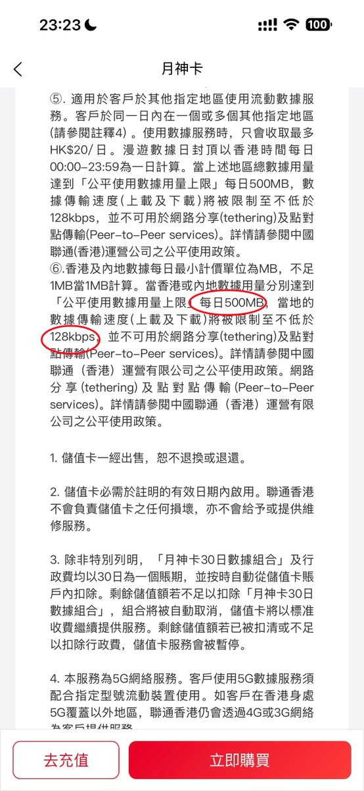
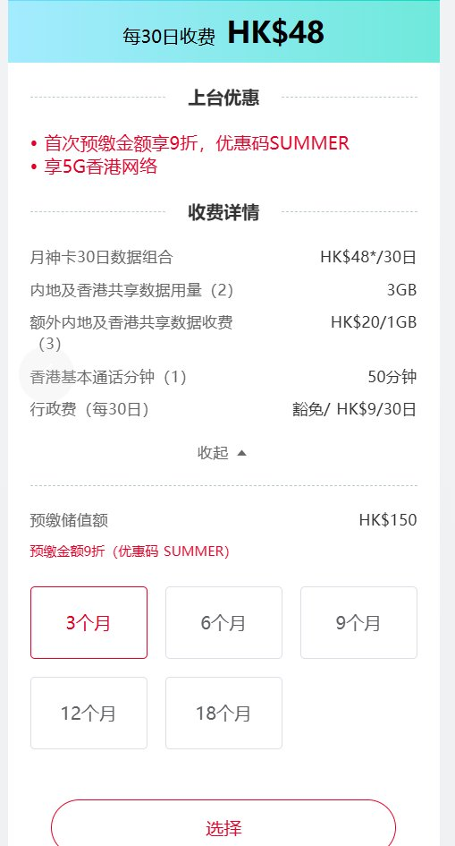
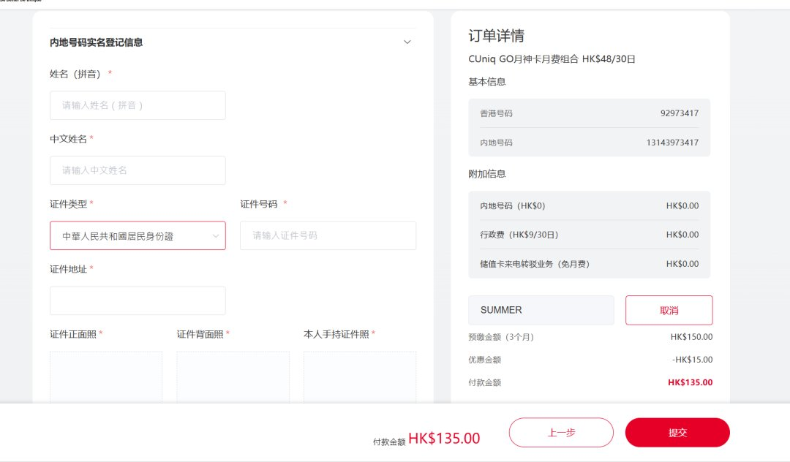
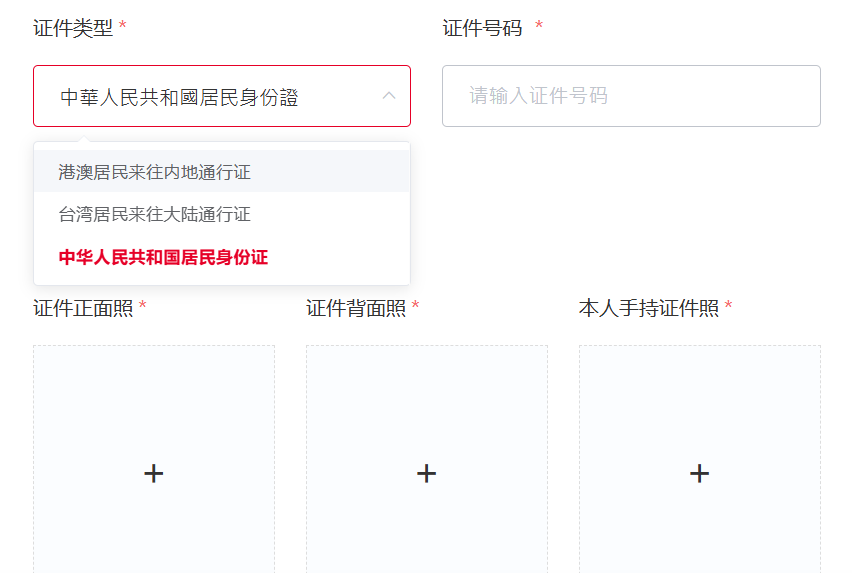

CUniq HK月神卡诟病挺多的，就比如在内地使用时，走VoLTE漫游还额外扣漫游流量。保号期间除了0.3HKD/分钟费用，甚至会扣漫游流量钱，并热心提醒「閣下正在按標准收費使用内地數據」即使不开数据漫游，当然还有左右脑互搏，局停内地号码甩锅给深圳联通🙄
不过论坛上奶友反馈了香港联通的公平使用政策，即便你有订阅每月套餐，每日用量达到500MB后限速128kbps（相当于16KB/s）。以及那个没用的内地号码，得益于内地联通3G退网，被叫方显示0086反诈提示境外来电。
问了香港的朋友，人家是直接去闲鱼找广州移动从化0，直接过户再配合移动的无忧行实现3卡3待），并且接听不要钱。大家选月神只是为了cn+hk号码，每个月9港币一劳永逸，不过自从限制内地人办理内地号码，这卡也没有多少意义了。
最绷不住的是，每次购买流量包时便会送200分钟内地香港通用语音，我是要天天鞭策hSBc吗？第一次见VoLTE漫游还会扣流量的运营商，只能说联通的领导们真nb！

不过论坛上奶友反馈了香港联通的公平使用政策，即便你有订阅每月套餐，每日用量达到500MB后限速128kbps（相当于16KB/s）。以及那个没用的内地号码，得益于内地联通3G退网，被叫方显示0086反诈提示境外来电。
问了香港的朋友，人家是直接去闲鱼找广州移动从化0，直接过户再配合移动的无忧行实现3卡3待），并且接听不要钱。大家选月神只是为了cn+hk号码，每个月9港币一劳永逸，不过自从限制内地人办理内地号码，这卡也没有多少意义了。
最绷不住的是，每次购买流量包时便会送200分钟内地香港通用语音，我是要天天鞭策hSBc吗？第一次见VoLTE漫游还会扣流量的运营商，只能说联通的领导们真nb！




中国联通（香港）CUniq月神卡停止为中国内地用户提供+86内地号，存量用户不影响。
目前在实名认证中的「内地号码实名登记信息」仅接受回乡证和台胞证，不再接受内地居民身份证，原因未知。
若用户余额不足或取消套餐，月神卡将停止数据流量，同时转为「行政费 HK$9/30日」保号状态。 https://t.co/jB7n1WHF1v
目前在实名认证中的「内地号码实名登记信息」仅接受回乡证和台胞证，不再接受内地居民身份证，原因未知。
若用户余额不足或取消套餐，月神卡将停止数据流量，同时转为「行政费 HK$9/30日」保号状态。 https://t.co/jB7n1WHF1v